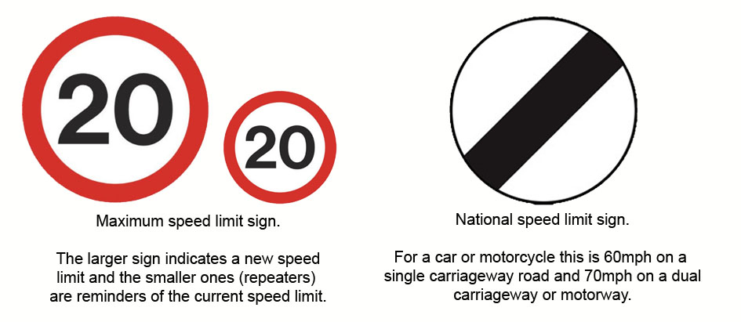
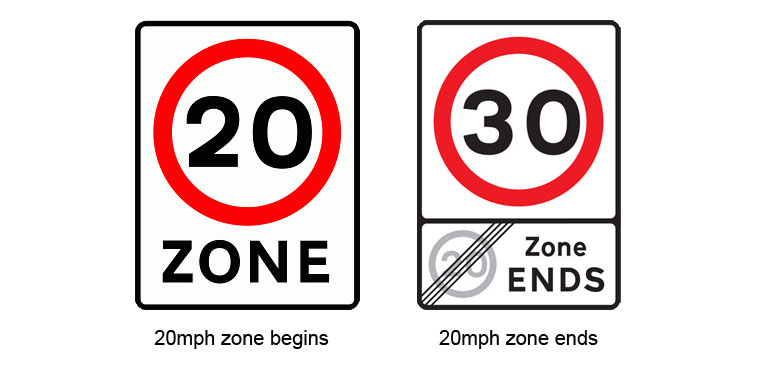
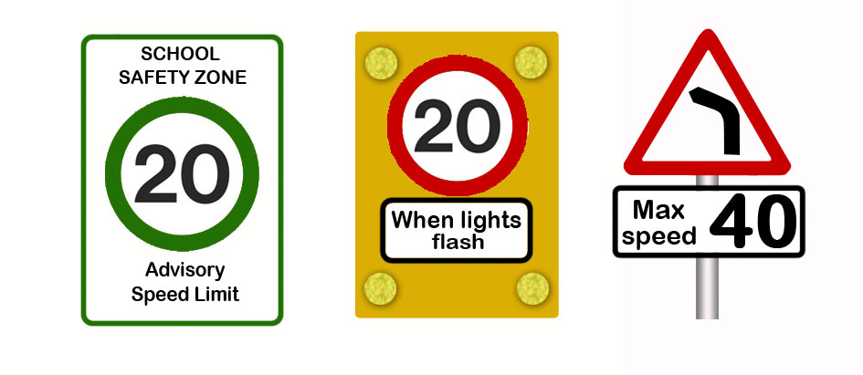

In 2015, 1,780 people were killed and 21,920 seriously injured on roads in Great Britain.
Driving too fast significantly increases the chance of serious injury or fatality so limits are imposed strategically to reduce the dangers. It is your responsibility, as a driver, to respect these speed limits and avoid being part of a tragedy.
Video clip contains graphic content
Recognising Speed Limits

The presence of carriageway lighting means that a road automatically has a speed limit of 30mph with the lamps taking the place of repeater signs. When lit roads have a speed limit other than 30mph, repeater signs are almost always* provided at regular intervals.
Where there is no carriageway lighting and there are no repeater signs, you can assume the national speed limit to apply.
*20mph Zones
A 20mph zone is indicated by entry and exit signs but will not have regular repeater signs.

Instead of repeater signs, the zone features traffic calming measures at regular intervals (every 50 metres or so). These can consist of speed humps, chicanes, road narrowing, planting and other measures. The zone is meant to be self regulating so, as long as you don't accelerate unnecessarily between the speed calming features, you will not unwittingly exceed the 20mph limit.
Advisory and Part Time Speed Limits
A green sign, as illustrated, can be placed outside schools. It is a request to not exceed 20mph at busy times. Where there is no school activity, the official speed limit can be reached.
Alternatively, a part time speed limit can be activated by flashing lights.

Sometimes a warning sign is accompanied by an advisory speed limit. You should decelerate accordingly to negotiate the hazard safely.
General Practice
Make sure you don’t accelerate beyond the current speed limit until you’ve passed the sign informing you of a higher one.
Where you see signs informing of a lower speed limit ahead, check your mirrors and slow down early and smoothly so that you are at or below that speed as you meet the sign.
Use an appropriate speed for the road and weather conditions. Where conditions are good you should make good progress up to the current speed limit but slow down accordingly where:
- Visibility is poor
- Road surface is poor
- The road layout requires a lower speed
- There are sharp bends
- You are sharing the road with pedestrians and cyclists
Never drive too fast to stop safely within the distance that you can see to be clear.
It is unsafe to travel unnecessarily slower than the speed limit where conditions are good. Stifling the traffic flow can irritate following drivers into carrying out risky overtaking manoeuvres.
Approaching a sharp bend, slow down and gear down, if necessary, on the approach. As you go around the bend, gently come back onto the gas to maintain your control. Avoid having to brake on the bend as control can be lost this way, especially if you’re too fast or the road surface is poor.